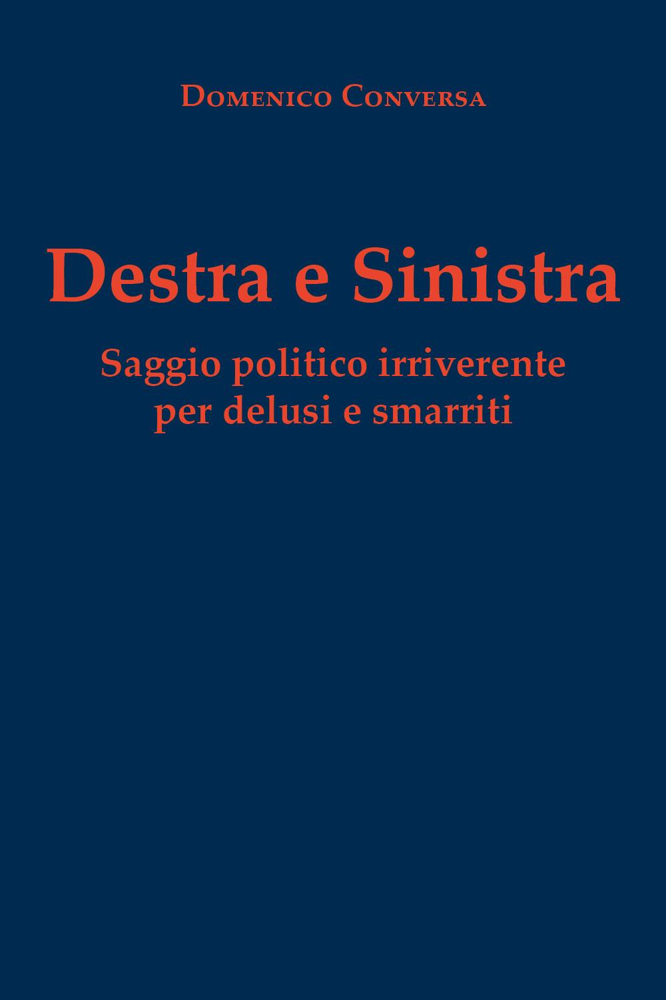
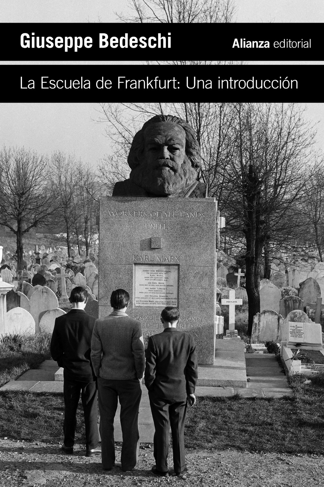
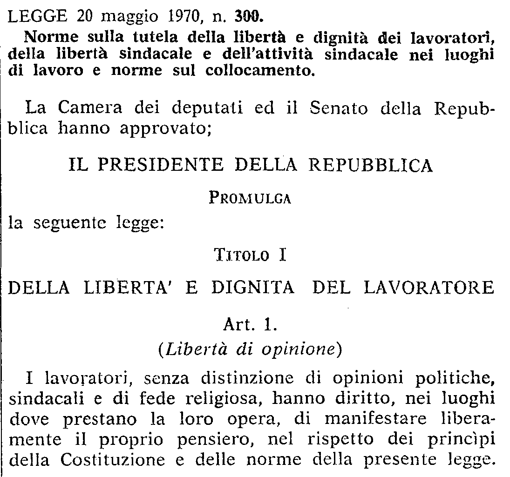
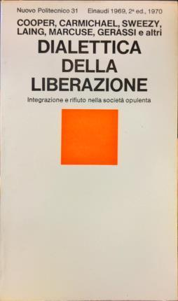
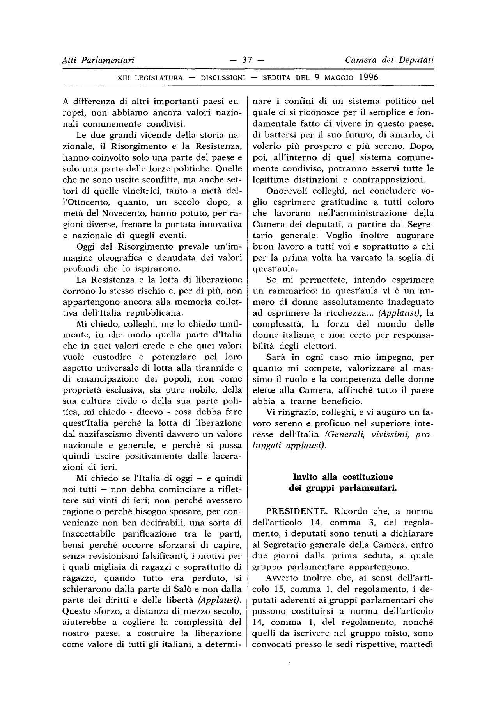

1:40:52 · 18 OPERE
Destra e Sinistra: categorie irriverenti?
Il filo del discorso
Dr Divago conversa con l’avvocato Domenico Conversa su Destra e sinistra. Saggio politico irriverente per delusi e smarriti. L’autore racconta che il libro nasce dall’incontro con ragazzi ai quali gli adulti trasmettono sfiducia verso la partecipazione: se la politica appare sempre indegna, perché dovrebbero interessarsene? La forma breve e ironica serve a restituire domande e contesto, senza offrire una soluzione universale.
Leggi la sintesi completaRiduci la sintesi
Dr Divago apprezza soprattutto la capacità di interrogare il linguaggio politico attraverso il paradosso. Per Conversa, destra e sinistra hanno avuto una funzione storica, ma oggi rischiano di diventare appartenenze professionali o televisive. Egli contesta sia la delega ai tecnici sia l’idea che tutto sia indistinguibile. Interpreta la convergenza delle politiche economiche attraverso neoliberismo, vincoli di bilancio e perdita di strumenti nazionali; considera già superata la distinzione proposta da Bobbio nel 1994. È una sua tesi politica: la moneta unica iniziò nel 1999, e i vincoli monetari o l’articolo 81 della Costituzione non equivalgono, di per sé, alla soppressione giuridica del welfare. Dr Divago collega questa trasformazione alla ricezione della teoria critica. Discute il libro di Giuseppe Bedeschi sulla Scuola di Francoforte e giudica riduttiva la scelta di fermarsi al 1950. La delimitazione è effettivamente dichiarata dall’autore, che la collega al mutamento dell’Istituto dopo il ritorno in Germania e all’emergere di una nuova generazione; l’interpretazione del volume come operazione di depotenziamento culturale appartiene invece a Dr Divago. Conversa ricorda poi la formazione giuridica, lo Statuto dei lavoratori e la distanza che avverte fra la precedente centralità del lavoro e un’opposizione costruita soprattutto contro il leader avversario. Il dialogo affronta astensionismo, selezione dei candidati e rappresentanza. I dati elettorali citati appartengono agli esempi dei due interlocutori e richiedono una verifica riferita alle singole consultazioni. La critica non conduce però a un invito a restare a casa: Conversa ribadisce esplicitamente, più avanti, che occorre votare e partecipare anche attraverso le contraddizioni. Alla politica vissuta come tifo contrappone la responsabilità di formulare domande e riconoscere bisogni concreti. Una lettura da Dialettica della liberazione, collegata al congresso londinese del 1967, sposta l’attenzione sulle forme di disumanizzazione che possono convivere con l’opulenza. Conversa rivendica il lavoro su inquinamento e problemi del territorio; Dr Divago polemizza con il terzomondismo, richiamando Bernal e Fanon e contestando la sostituzione della prossimità con cause lontane. Si tratta di valutazioni degli interlocutori, non di una dimostrazione generale di corruzione degli aiuti o dell’inutilità dell’azione climatica: ridurre emissioni climalteranti e inquinanti può produrre benefici comuni. Nel confronto fra diritti sociali e civili, Conversa attribuisce priorità alle condizioni materiali che rendono effettiva l’autonomia. Porta esempi relativi a casa, reddito e occupazione industriale, mentre Dr Divago insiste sulla deindustrializzazione e sul ruolo del denaro. Le valutazioni sulle persone transgender e sulle politiche di genere restano giudizi dei partecipanti, senza essere assunte come definizioni cliniche o negazioni della dignità individuale. Anche l’esempio sull’oro va distinto dall’inflazione al consumo: l’aumento del prezzo di un singolo bene non misura da solo la variazione generale del costo della vita. Un punto chiarificatore riguarda il dialogo fra un operaio e una dirigente del PD letto dal libro: Conversa conferma che lo ha inventato come satira. Non è una dichiarazione realmente pronunciata da Elly Schlein. Dr Divago lo usa per discutere un’istruzione orientata al mercato e un linguaggio che rischia di perdere contatto con l’esperienza quotidiana. La conversazione torna quindi alla memoria del fascismo e all’uso pubblico dell’antifascismo. Conversa legge il discorso di insediamento di Luciano Violante del 10 maggio 1996: comprendere perché alcuni giovani scelsero Salò non significava attribuire loro ragione né parificare quelle scelte alla lotta per diritti e libertà. Il richiamo al periodico di cui Almirante fu segretario di redazione va normalizzato in La difesa della razza. I successivi confronti su Moro, Berlinguer, terrorismo, Hannoun e personaggi pubblici rimangono argomentazioni e accuse degli interlocutori, non conclusioni giudiziarie: un’indagine o una fotografia non dimostrano automaticamente responsabilità personali o collettive. Conversa ritrova in Mark Fisher la nozione di impotenza riflessiva: percepire il problema senza riuscire a immaginare un’azione efficace. L’esempio dell’automobile sostituita pur essendo ancora funzionante introduce il rapporto fra consumo, desiderio e dipendenza tecnologica. Dal Trattato del Ribelle di Jünger ricava invece una possibilità di resistenza attraverso la lettura e il raccoglimento del pensiero. Dr Divago domanda quanto persino il gusto e la volontà siano orientati dall’ambiente sociale; Conversa osserva che il relativo benessere può rendere difficile riconoscere il bisogno di cambiamento. Il finale intreccia consenso digitale, responsabilità intellettuale e libertà. I richiami sanitari di Dr Divago non costituiscono una valutazione medica: i vaccini autorizzati sono sottoposti a studi e controlli, e il confronto fra immunità da infezione e da vaccinazione dipende da malattia, esito e durata, con un ruolo documentato dell’immunità ibrida nel Covid. Il ritorno a Spinoza, a una massima riconoscibile di Hillel e probabilmente alla Condizione operaia di Weil riporta il discorso alla difficoltà della ricerca e alle condizioni che permettono di pensare. Conversa conclude invitando soprattutto i giovani a coltivare relazioni e impegno osservabile nel proprio ambiente. Dr Divago associa questo appello al pluralismo: leggere più voci, confrontarsi seriamente e partecipare senza ridurre la politica a una squadra da sostenere.
I libri nel discorso

Destra e sinistra
Note sul riferimento
Copertina: Youcanprint, 2025
Riferimento ricavato dalla trascrizione automatica.
Destra e sinistra. Ragioni e significati di una distinzione politica
Note sul riferimento
Copertina: Donzelli, Saggine, edizione del trentennale 2023, ISBN 9788855224659, prefazione di Nadia Urbinati; copertina con autore, titolo, sottotitolo e indicazione della edizione. Opera originaria del 1994, distinta dalle successive prefazioni e ristampe.
Immagine autentica dell’opera, controllata visivamente; l’edizione di riferimento non è attribuita al filmato.
Riferimento ricavato dalla trascrizione automatica.

Introduzione a La scuola di Francoforte
Note sul riferimento
Copertina: Alianza, 25 aprile 2024, traduzione spagnola Manuel Cuesta, ISBN 9788411486392
Copertina autentica ufficiale della traduzione spagnola della stessa opera, con titolo, autore e marchio Alianza leggibili. Non è la copertina Laterza 1985 discussa nel video. La relazione con il titolo italiano è dichiarata nel colophon dell’anteprima; copyright 1985/2024. Nessuna attribuzione di questa edizione al relatore.
Riferimento ricavato dalla trascrizione automatica.

Statuto dei lavoratori (legge 20 maggio 1970, n. 300)
Note sul riferimento
Porzione della prima pagina dello Statuto · G.U. 27 maggio 1970, p. 3404: Legge 20 maggio 1970, n. 300, stampa originaria nella Gazzetta Ufficiale della Repubblica Italiana, n. 131, 27 maggio 1970, pagina 3404. Porzione nativa della colonna destra con intestazione, promulgazione e articolo 1 completo. Non copertina libraria o testo consolidato attuale.
Il fascicolo contiene anche altri atti. La riproduzione è limitata alla legge pertinente e non include la diversa norma presente nella colonna sinistra. Non identifica il manuale di Giugni o un’edizione materialmente mostrata nel video.
Nel passaggio: 1123.16–1135.58 s: Statuto dei lavoratori e 1970 espliciti. Giorno 20 maggio, numero 300 e titolo ufficiale completo sono dati della Gazzetta, non citazione verbale.
Burnt Norton (Four Quartets, I)
Identificazione probabile
Note sul riferimento
Raccolta: Four Quartets: Faber · Four Quartets · edizione in brossura 56 pagine · ISBN 9780571068944. Copertina dell’intera raccolta; Burnt Norton è il primo dei quattro componimenti.
Copertina autentica dell’intera raccolta Four Quartets, contenente Burnt Norton; nessuna edizione autonoma del componimento viene simulata. Immagine distribuita da IBS, dati editoriali Faber e London Review Bookshop.
Riferimento ricavato dalla trascrizione automatica.

Dialettica della liberazione. Integrazione e rifiuto nella società opulenta
Note sul riferimento
Copertina: Fotografia autentica della seconda edizione Einaudi 1970: in alto si leggono Nuovo Politecnico31, Einaudi 1969,2ªed.1970. Fondo chiaro e quadrato arancione. Il filmato ricorda il 1969, ma non si certifica che questa sia la medesima impressione mostrata.
Immagine autentica dell’opera, controllata visivamente; l’edizione di riferimento non è attribuita al filmato.
Riferimento ricavato dalla trascrizione automatica.
Atena nera. Le radici afroasiatiche della civiltà classica
Note sul riferimento
Copertina: Il Saggiatore, edizione italiana ISBN 9788842813477
Copertina autentica pubblicata dall’editore: Martin Bernal, titolo e sottotitolo presenti. L’immagine illustra l’edizione italiana in catalogo, non una copia confermata nel video né tutti i volumi dell’opera inglese.
Riferimento ricavato dalla trascrizione automatica.
I dannati della terra
Note sul riferimento
Copertina: Einaudi, Piccola Biblioteca Einaudi nuova serie, 2007, a cura di Liliana Ellena, traduzione di Carlo Cignetti, prefazione di Jean-Paul Sartre; ISBN 9788806185473.
Immagine autentica dell’opera, controllata visivamente; l’edizione di riferimento non è attribuita al filmato.
Riferimento ricavato dalla trascrizione automatica.

Costituzione della Repubblica Italiana
Note sul riferimento
Copertina dell’edizione Intra aggiornata al 2023: Intra · 2023 · introduzione di Umberto Vincenti
Copertina autentica del testo integrale, aggiornata alla legge costituzionale 26 settembre 2023 n.1. È successiva al filmato del 2019 e non rappresenta la versione storica letta dal relatore. Umberto Vincenti firma l’introduzione.
Riferimento ricavato dalla trascrizione automatica.

Discorso di insediamento alla Presidenza della Camera (10 maggio 1996)
Note sul riferimento
Copertina: Camera dei deputati, XIII legislatura, resoconto stenografico seduta 1, pagina 37, 9–10 maggio 1996
Pagina 37 del resoconto originale della Camera dei deputati. Contiene il brano letto sui vinti di Salò e il rifiuto della parificazione. È una pagina del documento, non una copertina o un frontespizio; l’intestazione riporta il giorno iniziale della seduta, 9 maggio, continuata il 10.
Riferimento ricavato dalla trascrizione automatica.
La difesa della razza
Note sul riferimento
Copertina: Fotografia museale di un fascicolo del periodico, collezione Museo Ebraico di Roma
Fotografia autentica museale 300 × 300 di una porzione della copertina di un fascicolo, con testata leggibile. Il ritaglio fotografico non riproduce l’intero fascicolo; numero e data non sono identificati nel parlato. Documento storico di propaganda razzista, non libro né immagine inventata.
Riferimento ricavato dalla trascrizione automatica.
Psicanalisi della società contemporanea (The Sane Society)
Identificazione probabile
Note sul riferimento
Copertina: Copertina inglese The Sane Society, Routledge Classics, 2002, seconda edizione, 424 pagine nel catalogo editoriale, ISBN 9780415270984. Originale Rinehart 1955; prima edizione italiana Edizioni di Comunità 1960. Il 1964 pronunciato nel video può indicare una successiva edizione italiana.
Copertina autentica Routledge, tessitura verde e banda rossa con Fromm e titolo inglese. L’indice identifica il tema in Can a Society be Sick? The Pathology of Normalcy. La copertina inglese del 2002 non è attribuita all’edizione italiana del 1964.
Riferimento ricavato dalla trascrizione automatica.

Realismo capitalista
Note sul riferimento
Fotografia editoriale del volume NERO: NERO · Not, 2018 · traduzione Valerio Mattioli
Fotografia editoriale autentica del volume NERO: titolo, autore e marchio leggibili, copertina e dorso visibili. L’immagine raffigura la copertina del volume. L’edizione italiana è del 2018, non del 2009.
Riferimento ricavato dalla trascrizione automatica.
Trattato del Ribelle (Der Waldgang)
Note sul riferimento
Copertina: Adelphi, Piccola Biblioteca 248, 1990, traduzione F. Bovoli, ISBN 9788845907586
Copertina autentica Adelphi verde chiaro, con autore e titolo corretti. Illustra l’edizione italiana 1990 del saggio originario 1951; non la distinta edizione elettronica 2019 e non un esemplare identificato audiovisivamente.
Riferimento ricavato dalla trascrizione automatica.
Etica
Note sul riferimento
Copertina: Laterza · Biblioteca Filosofica · 2009 · traduzione di Sergio Landucci
Immagine autentica dell’opera, controllata visivamente; l’edizione di riferimento non è attribuita al filmato.
Riferimento ricavato dalla trascrizione automatica.
Introduzione aritmetica
Note sul riferimento
Frontespizio dell’edizione: Introduction to Arithmetic, traduzione di Martin Luther D’Ooge, studi di Frank Egleston Robbins e Louis Charles Karpinski, Macmillan, 1926, University of Michigan Studies, Humanistic Series XVI, 318 pagine.
Frontespizio autentico della traduzione inglese del 1926, dal volume digitalizzato della University of Michigan. Riproduzione del frontespizio; l’immagine non raffigura una copertina esterna. Titolo, autore e traduttore sono riscontrati anche nei cataloghi; nessuna edizione italiana è attribuita al filmato.
Riferimento ricavato dalla trascrizione automatica.

Pirqè Avòt (Massime dei Padri)
Identificazione probabile
Note sul riferimento
Copertina: Copertina Massime dei padri. Pirké Avòt. Con traduzione a fronte, commenti, schede tematiche e racconti, Giuntina, Fuori collana, 2021, illustrazioni di Boris Shapiro, introduzione di Shalom Hazan, prefazione di Riccardo Di Segni, ISBN 9788880579014.
Copertina autentica illustrata con albero, figure di maestri e grande titolo ebraico Pirqè Avòt; immagine intera della scheda ISBN. Il titolo italiano non è sovrapposto artificialmente alla grafica. Hillel è autore della massima citata, non dell’intero trattato; Shapiro è illustratore, non autore antico. L’edizione moderna non viene attribuita al contributo.
Riferimento ricavato dalla trascrizione automatica.

La condizione operaia
Identificazione probabile
Note sul riferimento
Copertina: SE, Saggi e documenti del Novecento, 1 ottobre 2020, 320 pagine, traduzione di Franco Fortini, postfazione e note di Giancarlo Gaeta, ISBN 9788867235506. Copertina beige con immagine di una donna e un bambino. Non si attribuisce questa edizione al video.
Immagine autentica dell’opera, controllata visivamente; l’edizione di riferimento non è attribuita al filmato.
Riferimento ricavato dalla trascrizione automatica.